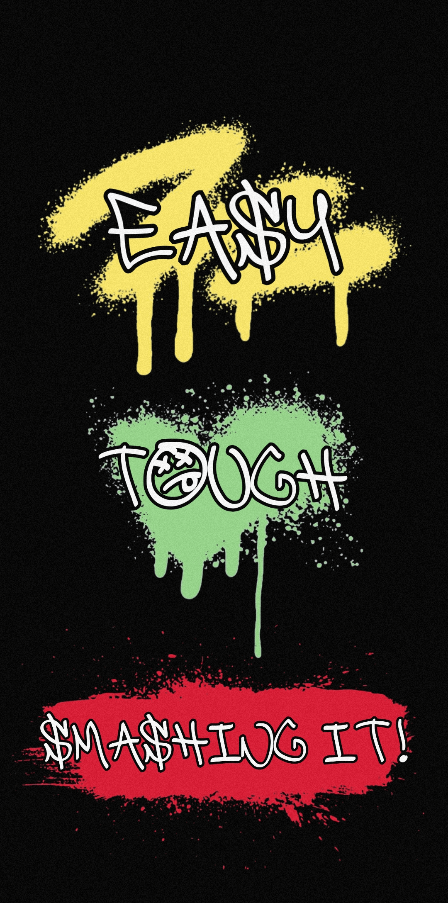

Hello! Welcome to my website and thank you for downloading my app!
So what’s this app for?
Box 2D Beat! can be used by both amateurs and pros alike; amateurs can use it like a group exercise class and benefit from the instructions when they want to be alone, and pros can use it to develop speed, power and stamina. It does this by forcing you to keep to a tempo; if you try to go fast on the pads or on a bag etc. without this app, you will unknowingly slow down as you go: with this app, you will know at which point you start to slack, enabling you to monitor it and thus be able to push through that point little by little as you get better with that session. Once you get through that session without flaking, you move onto the next one. Don’t believe me? Try it for one month and then come back to the bag. See how your speed, power and stamina have improved!
What’s the best way to use this app?
Find a session that you can’t quite make it all the way through and keep coming back, throwing it at the beginning of your session (after warming up), and when you’re able to do that one with ease, move on to the next one! Or you can keep on that one and bring the power up! If you want to work on power, do a slow 1 to 8! and hit every punch with everything you’ve got! If you want to see where I’m at, check the video above; as you’ll see, I start flaking just as it comes to an end. But I will be back!
Tip!
If you are on a swinging bag and you find yourself too close to execute the combo, punch up!

If you want to post your session on social media, just email me in the first instance then record your session but with the music on a speaker so I can hear it. When you send the video to me, I will overdub the actual music and shabam! you have a video to share with the world!
Please connect with our social media on the “Contact” page! And link us in to anything Box 2D Beat!-related!
You can find the app on both iPhone and Android below!